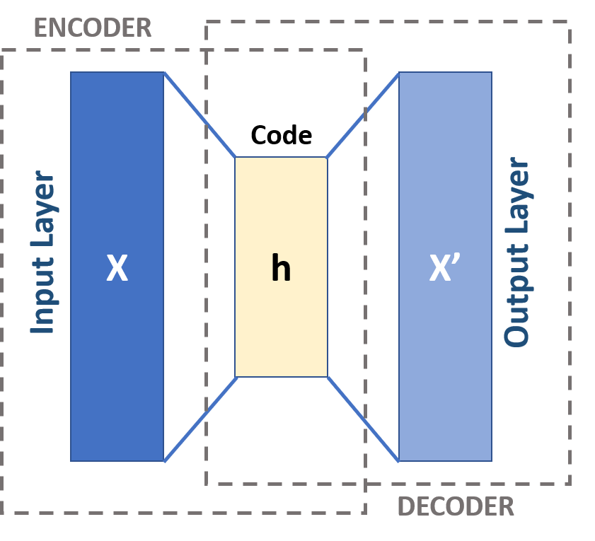
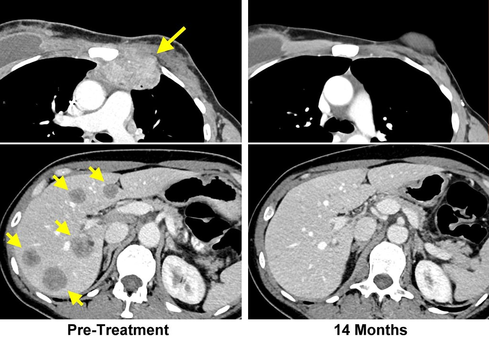
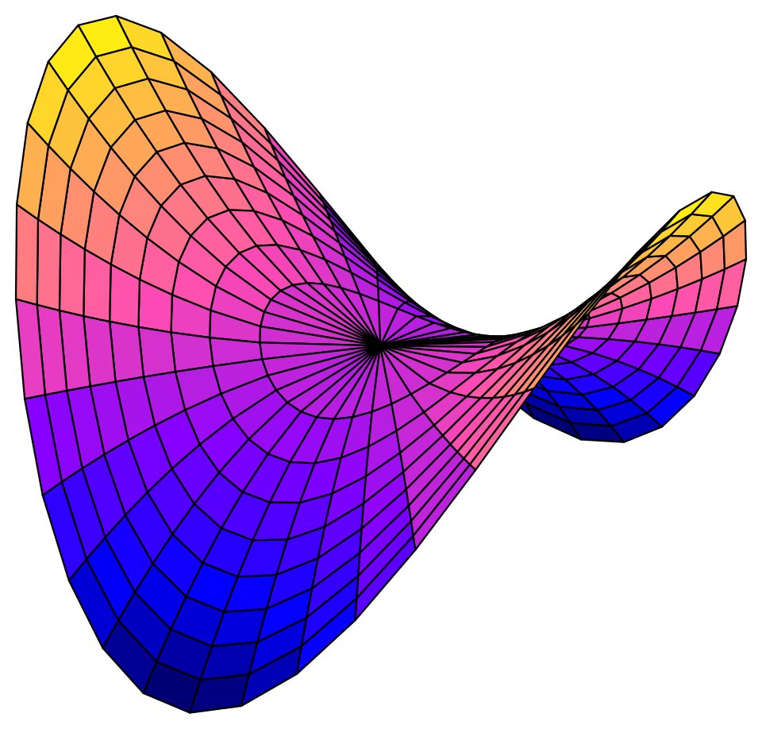

Generative modeling sits at the heart of a fundamental challenge in machine learning: how do you learn to produce new data when you can’t directly access or estimate the underlying distribution? Early approaches like Variational Autoencoders (VAEs) made this process tractable through explicit probability modeling, but paid a cost in sample quality and generation speed. Generative Adversarial Networks (GANs), introduced by Ian Goodfellow in 2014, took a different route: skip the explicit distribution entirely, and instead train two networks against each other until one learns to generate samples indistinguishable from real data.
This week in my Deep Learning in Biology overview series, we dig into how GANs work, why they’re difficult to train, and the architectural innovations that have made them one of the most widely used frameworks for image generation and beyond.
Discriminative vs. Generative
Most machine learning models are “discriminative” - they learn to classify or distinguish between inputs. The goal of a generative model, on the other hand, is to learn the underlying structure of the data well enough that it can produce new samples that resemble it.
Generative models can be divided into two categories:
Explicit density models (like VAEs and PixelCNN, see below) directly estimate the probability distribution of the data
Implicit density models (including GANs) skip that step and learn to sample from the true data distribution without explicitly estimating it. This process avoids some of the more complicated math, but introduces other challenges…
The model landscape before GANs
Before GANs, a variety of explicit density generative models were used to estimate input data distributions.
Autoencoders compress data into a compact latent representation and then attempt to reconstruct the original data. They’re useful for feature learning but weak as generative models: the generated latent space can be incredibly fragmented, so random points from the space often decode to noise.

Variational Autoencoders (VAEs) address this issue by making the latent space smooth and continuous. The encoder outputs a probability distribution (e.g. Gaussian) rather than a single point, and the decoder samples from it. VAEs are principled and interpretable, but they also tend to produce blurry outputs. Optimizing the Evidence Lower Bound (ELBO) doesn’t directly optimize perceptual quality.

PixelRNN generate images one pixel at a time, each conditioned on all previous pixels. This allows exact likelihood estimation and sharper outputs than VAEs. However, just like with general RNNs, sequential generation is slow. PixelCNN improves on this limitation with convolutional parallelism.
GANs take a different approach by dropping explicit density estimation entirely.
How GANs Work
A GAN consists of two neural networks trained simultaneously in a minimax game:
The Generator (G) takes random noise as input and transforms it into a synthetic sample. Its goal is to fool the discriminator.
The Discriminator (D) receives either a real sample from the training data or a fake one from the generator, and tries to classify which is which.

Training alternates between the two networks. The discriminator trains for a step while the generator is frozen, learning to distinguish real from fake. Then, the generator trains while the discriminator is frozen, updating to better fool it.
At convergence, the generator should be able to produce samples realistic enough that the discriminator can do no better than random guessing (i.e., achieve 50% accuracy). In practice, reaching this equilibrium is quite challenging!
Challenges in training GANs
The most common obstacle in GAN training is known as mode collapse. Rather than capturing the full diversity of the training data, the generator finds a narrow set of outputs that reliably fool the discriminator and keeps producing only those.
Training instability comes from the adversarial dynamic. If the discriminator gets too strong, its gradients become uninformative for the generator. If the generator dominates, the discriminator can’t provide useful signal. Keeping the two in balance is difficult.
Other common issues include:
vanishing and exploding gradients
hyperparameter sensitivity
non-convergence (the two networks oscillate instead of improving)
Practical Fixes
In response to these challenges, a variety of solutions have been adopted by the ML community:
Wasserstein Loss (WGAN) replaces binary cross-entropy with the Earth Mover’s distance, which gives smoother, more informative gradients. WGAN-GP adds a gradient penalty for further stability.
Spectral Normalization constrains the discriminator’s weight magnitudes to prevent it from overpowering the generator.
Two-Timescale Update Rule (TTUR) uses a lower learning rate for the generator than the discriminator to keep training balanced.
Minibatch Discriminationas has the discriminator compare samples within a batch, encouraging the generator to produce more diverse outputs.
Progressive Training starts training at low resolution (4×4) and gradually adds layers to both networks. This is the key technique behind Progressive GAN (PGAN), a model that was able to produce photorealistic 1024×1024 images.
Notable GAN architectures
Least Squares GAN (LSGAN) replaces binary cross-entropy with a least-squares loss, which penalizes overconfident wrong predictions more heavily and provides stronger gradient signals.
Conditional GAN (cGAN) feeds additional information - a class label, text description, or image — to both the generator and discriminator. This allows targeted generation: instead of sampling randomly from the learned distribution, you can specify what you want to generate.
Pix2Pix is a supervised image-to-image translation model built on cGANs. The generator is a U-Net (encoder-decoder with skip connections to preserve fine spatial detail) and the discriminator is a PatchGAN that evaluates local image patches rather than the full image. It’s well suited for tasks like sketch-to-photo or satellite-to-map conversion.

CycleGAN handles the case where paired training data isn’t available. It uses two generators and two discriminators, plus a cycle-consistency loss: translating an image from domain A to B and back should recover the original. This constraint is enough to learn meaningful mappings between unpaired domains, such as photos to paintings or summer to winter scenes.
Evaluating GANs
Evaluating generative models is a challenging task, because unlike discriminative models that come with gold standard labels to compare to, there is often no single correct answer! The following are some examples of commonly used evaluation metrics for GANs:
Inception Score (IS) measures quality (are outputs clearly classifiable?) and diversity (do they span many classes?) of generated labels. However, it does not directly compare generated labels against real data.
Fréchet Inception Distance (FID) compares the feature distributions of real and generated images using a pretrained network. Lower FID indicates more realistic and diverse outputs. It’s the standard benchmark for image GANs.
Precision and Recall separately measure fidelity (do generated samples look real?) and coverage (do they span the diversity of the training data?). Mode collapse shows up as low recall without necessarily affecting precision.
Human evaluation and downstream task performance are also used, depending on the application.
Applications of GANs
GANs have been applied across a range of domains:
Image synthesis and super-resolution: Generating high-resolution images from scratch or upscaling low-resolution inputs.
Data augmentation: Producing synthetic training data where labeled examples are scarce.
Medical imaging: Synthesizing missing scan modalities — for example, generating a PET scan from an MRI — to reduce the need for additional imaging.

Could we use GANs to simulate the intermediate trajectory of cancer treatment? Style transfer and domain adaptation: Translating images between visual domains without paired data.
Reinforcement learning: Simulating possible future states so agents can plan without interacting with the real environment.
Open Questions
Several theoretical questions about GANs remain open. Whether a GAN can converge to the true data distribution (rather than an approximation), what distance measure is actually being optimized, and how GANs generalize to unseen data are all active areas of research. The manifold hypothesis, which states that high-dimensional data like images lie on a lower-dimensional surface, provides some intuition for why GANs work. However, a rigorous theoretical account is still developing.

Diffusion models (to be covered in a future post) have recently surpassed GANs on standard image generation benchmarks, with more stable training. Nevertheless, GANs still have advantages in speed and controllability, and the adversarial training framework continues to be influential across the field.